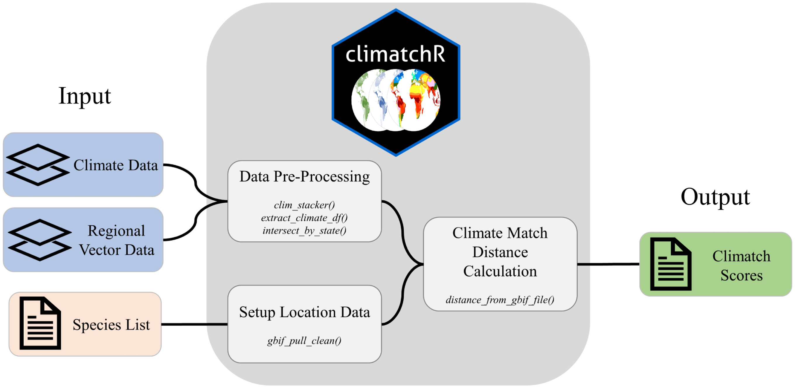

Discussion:
For my final project in Web Mapping, I decided to make an interactive map displaying what I learned through my internship. I used the
climatchR package from USGS to perform horizon scanning on invasive species.
Information:
is an aquatic invasive species that can cause economic and ecologic damage if it establishes in a community. This is the example species I used.
Horizon Scanning is a technique used to examine invasion risk. An example of horizon scanning would be to see that it is difficult to grow dragon fruit in Wisconsin.
I computed current and future climate matching scores for the states along the Mississippi River using the package.
The current and future scores are on a scale from 0-10, with 10 being the best climate match for the species.
The
climatchR workflow (from
DOI) requires
climate and
species data.

Map authored by
Charlie Faude.